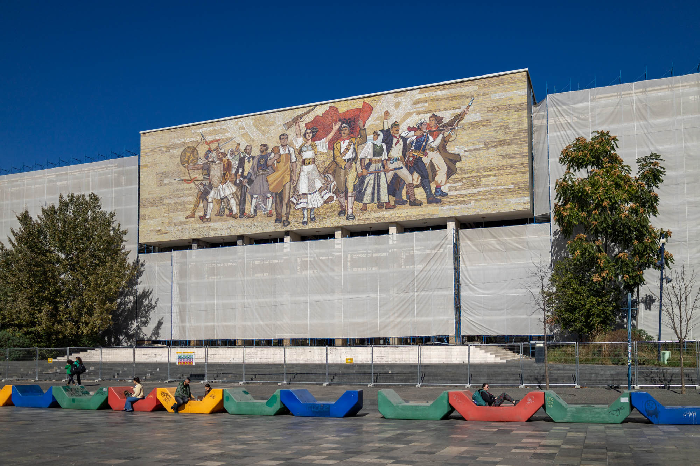
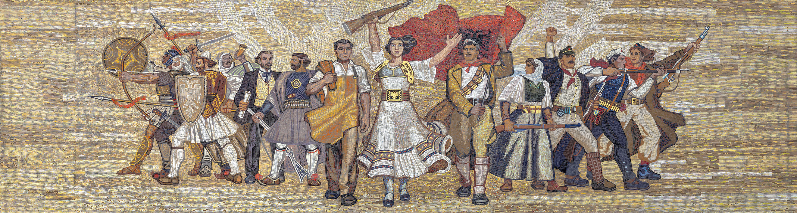
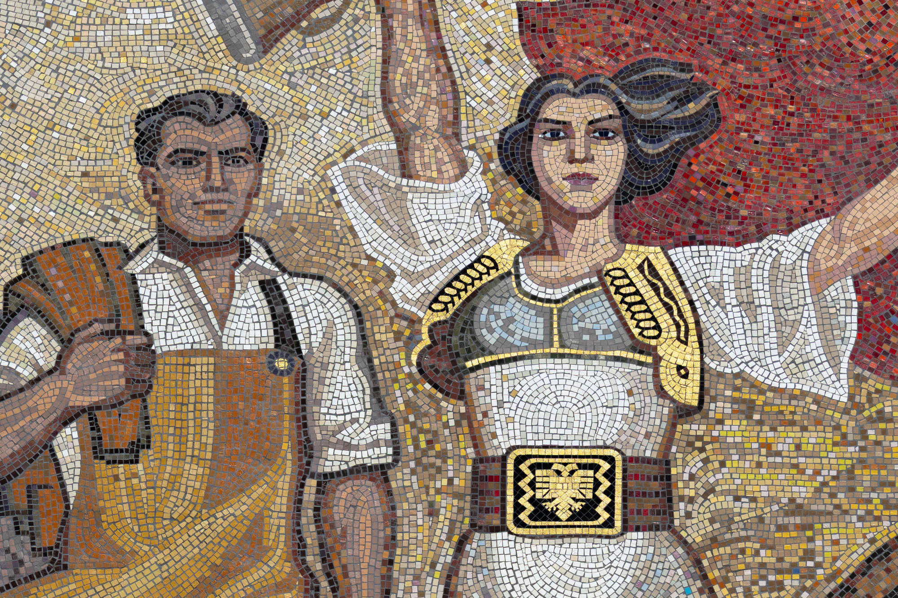
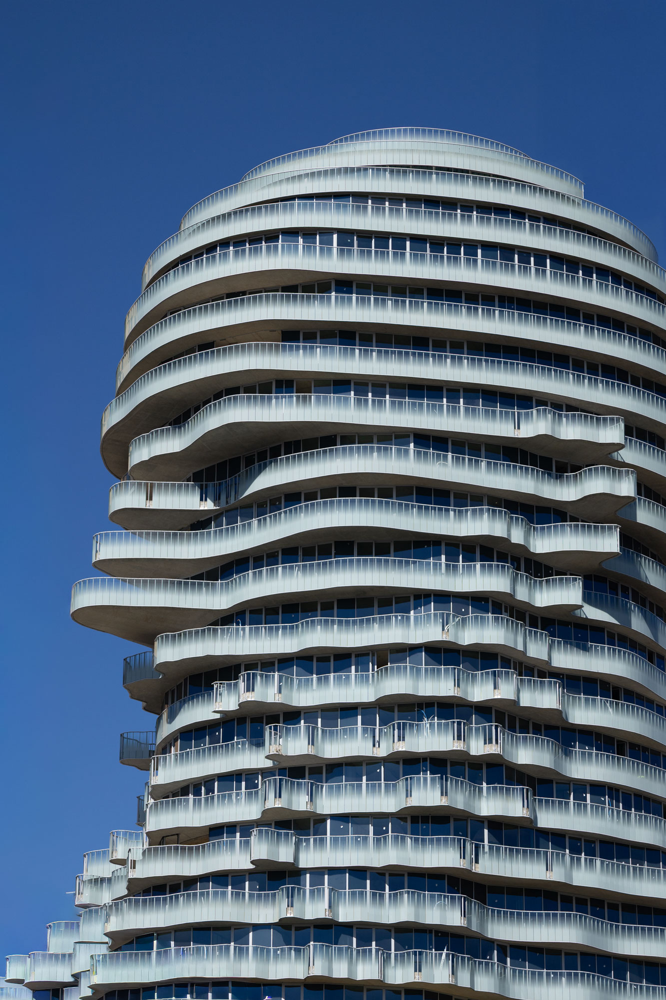
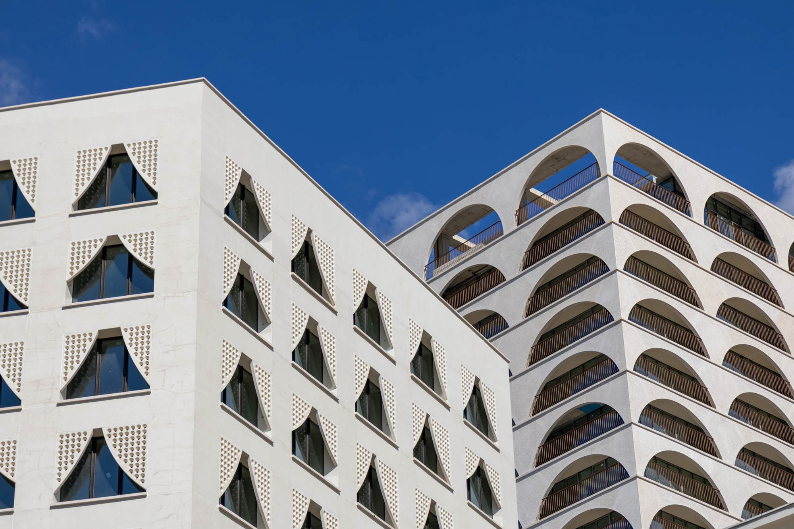

Tirana, one of EU’s next frontiers, is a city in transformation. Emerging from its communist past, it is rapidly building itself a capitalist future. New towers and new dreams are being built in real time, alongside corruption and short-term thinking.

The Albanians mosaic
This 40-metre-wide by 11-metre-tall mosaic is the star of the National Historical Museum's front façade. Created in 1981, it portrays key historical figures from Albania’s past—spanning from ancient times to the still-recent communist era. At its centre is a female figure, representing the Albanian motherland, flanked by revolutionaries and intellectuals. Since its restoration in 2023, the mosaic shines across Skanderbeg Square in the bright Albanian sun.
Location: 41.329146, 19.817272


Unusual skyscrapers
Tirana's Rock is one of the newest developments transforming the city into a hotspot for modern architecture. This 26-storey, mixed-use building is uniquely designed in the form of Gjergj Kastrioti (better known as Skanderbeg) with its floorplan and balconies forming his eyes, ears, nose, mouth, and beard. It is one part of the city’s evolution towards realising the Tirana 2030 Masterplan.
Location: 41.329971, 19.819498

The cost of progress
Just as every coin has two sides, there’s also a dark side to Tirana’s construction boom. Systemic corruption is driving the loss of public spaces, pushing property prices beyond the reach of most Albanians, and turning many new developments into vehicles for money laundering rather than homes. When speaking with locals and tour guides, most note that many of these new luxury buildings remain empty.
Location: 41.327542, 19.820214

It seems Tirana now stands at a crossroads, facing multiple possible futures. Only a return visit will reveal which path the city has chosen.